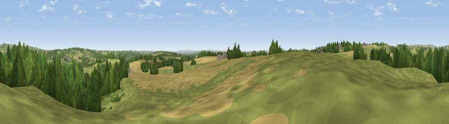

Viewpoint near Windley
#14121 in England · top 8% of its area beats it · near WindleyThe view, rendered

A 360° render of this exact spot computed from the terrain model, tree cover and land cover — summer colours, afternoon light, calibrated against photographs of famous viewpoints. Real trees, hedges and buildings will differ in detail.
The panorama
Grey silhouette: terrain skyline in each direction (720 bearings, Earth curvature and refraction included). Dashed green: skyline with trees (+15 m) and buildings (+8 m) as obstacles. Blue strip: how far the ground is visible on each bearing.
Where the view opens
Wedge length = distance to the farthest visible ground on that bearing (vegetation-aware). Rings at 10, 25 and 50 km.
What fills the view
44% grassland · 34% woodland · 21% cropland · 1% built-up
Angular shares of the visible panorama (visual magnitude), not map area. Landscape diversity 0.48 (0–1 Shannon).
Key numbers
More beautiful places nearby
The staircase of upgrades: each row has a higher view potential than everything closer. Driving times are estimates from straight-line distance, calibrated against real road routing — check an actual route before setting out.
| Place | Direction | Drive | Score |
|---|---|---|---|
| Viewpoint near Hazelwood | ENE · 4 km | ~9 min | 66.3 |
| Alport Height | N · 7 km | ~15 min | 73.9 |
| Tissington Hill | WNW · 17 km | ~30 min | 75.5 |
| Viewpoint near Stanton under Bardon | SSE · 35 km | ~53 min | 76.0 |
| Viewpoint near Woodhouse Eaves | SE · 36 km | ~55 min | 77.7 |
| Viewpoint near Mow Cop | WNW · 46 km | ~66 min | 78.9 |
| Viewpoint near Mow Cop | WNW · 46 km | ~67 min | 80.2 |
| Viewpoint near Little Wenlock | WSW · 75 km | ~99 min | 84.2 |
52.99362, -1.55413 · source: screening · position refined by local search. Computed location — check access rights before visiting.